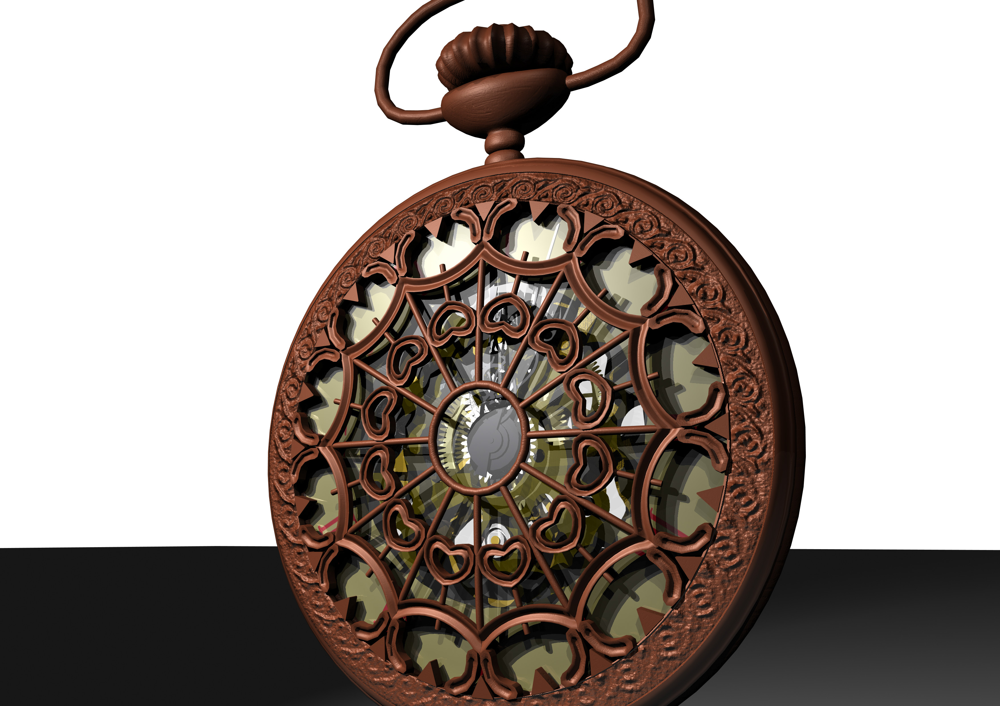
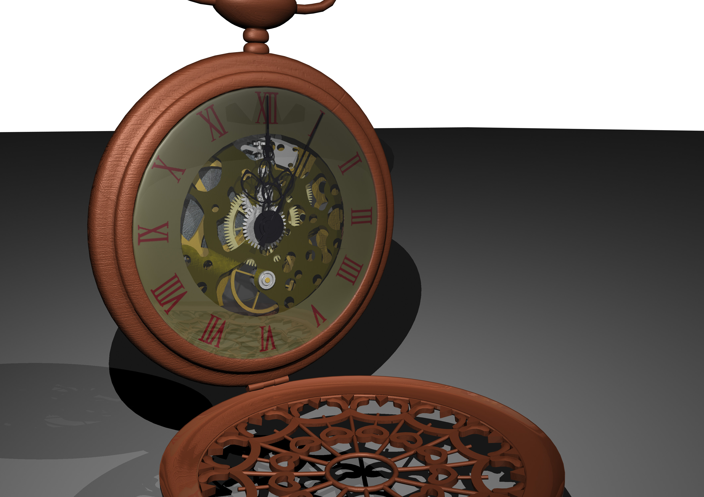
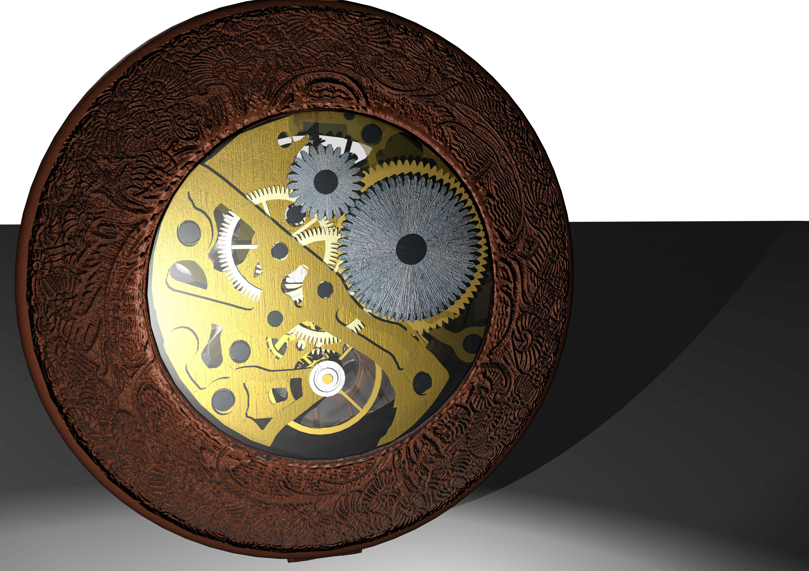
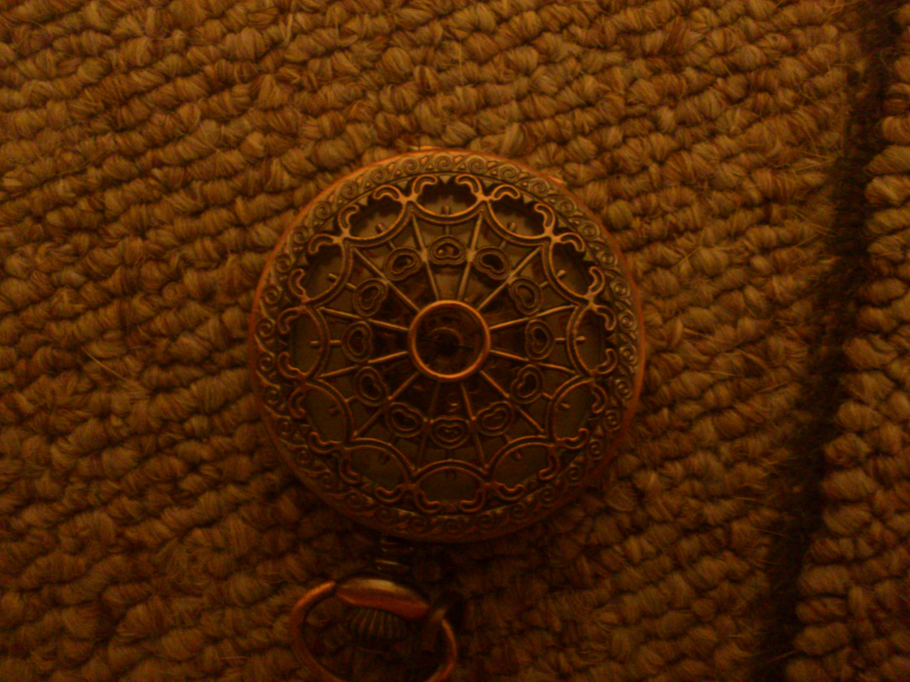
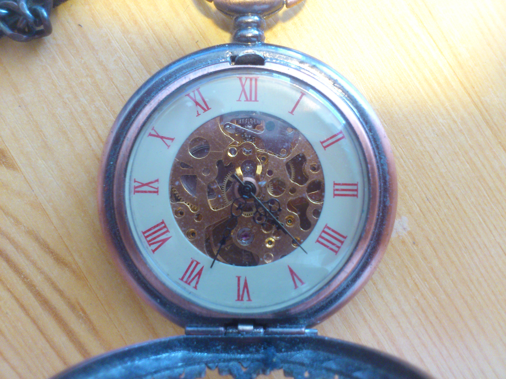

Watch
Finished in March 2014
Reason to create project:
This project was created as 1st project for course KMA [1] during my bachelor studies. This was the first project I created in Maya. [2][4]
About project:
Task was to model, texture and animate any kind of time measuring device (alarm clock, wristwatch,...).
I decided to create my pocket watch with all internal mechanisms.
Project was created in Maya 2014 (Student licence), rendered by Maya Software Renderer.
Scene contains pocket watch. Glass covers their both sides revealing inner mechanisms. Most of the inner parts are connected by expressions.
All three hands are connected to with core parts (balance wheel, anchor and escapement wheel). Minute and hour hands are also connected to winding pin to enable setting correct time without having to manipulate with core parts.
Most challenging were the core parts of mechanism. I had to create equations for movement of balance wheel, anchor and escapement wheel based on time.
More problematic was tuning it, so over long period of time the parts are still synchronized.
Only thing that weren't implemented were parts, that couldn't be seen, leaf springs and main spring winding [3].
All textures used in this project are Maya 3D wood textures.
Scene is expected to be used in Maya. Exported .fbx file probably doesn't have all the functions or correct look. (.fbx scene is just for preview or to access models even without Maya)
Resources:
Bump-Scratches01.jpg - source: http://www.geminoidi.com/images/textures/imperfections_and_scratches_texture.jpg
Other textures were obtained from photos of real watch.
Scene is expected to be used in Maya. Exported .fbx file probably doesn't have all the functions or correct look. (.fbx scene is just for preview or to access models even without Maya)
[1] KMA (Kurz multimediálních aplikací - Multimedia Applications Course) - http://leyfi.felk.cvut.cz/courses/kma/ (course was about modelling in Maya)
[2] I don't count little projects created during first 4 weeks of that course, where I was learning basic use of Maya.
[3] Winding pin has 2 different purposes depending on its position. And there is no spring to wind in model.
[4] Second project for KMA was Cloud Factory
Renders:



Photographies of real watch:


 Video:
download
Video:
download